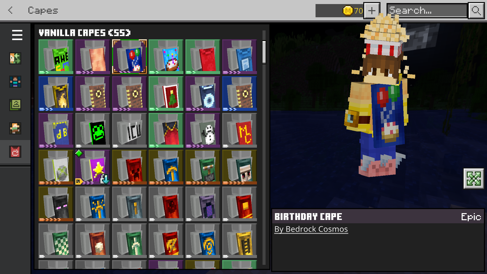

Custom Capes
Express yourself with an extensive library of custom capes. Bedrock Cosmos acts as a custom-built proxy that seamlessly adds tons of unique cape designs to your Minecraft Bedrock experience.
Browse through hundreds of unique designs and equip your favorite cape to stand out in any server or world.
